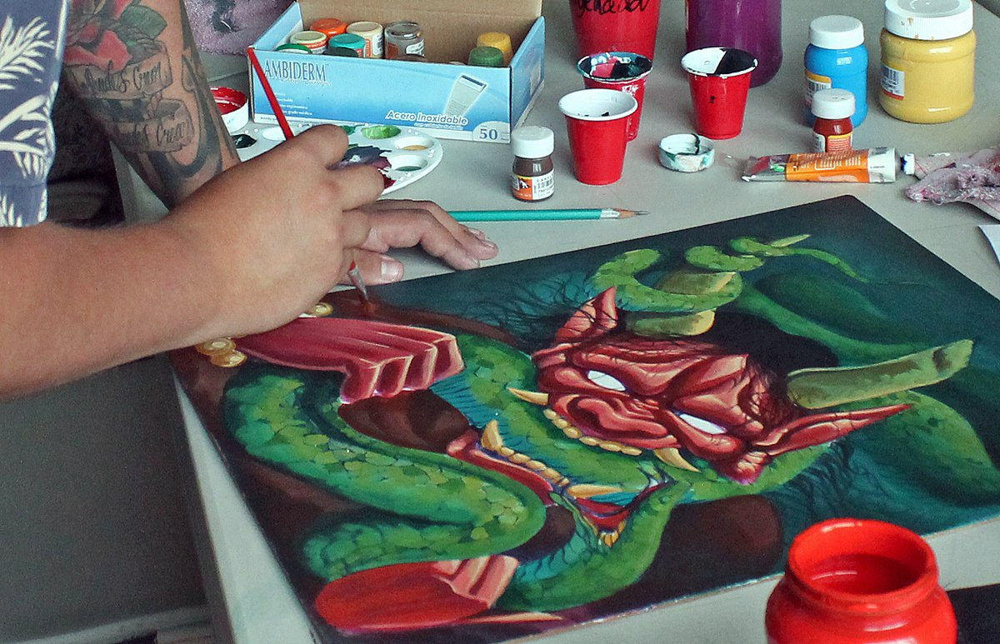

Diccionario
Calendario
 Definición:
Definición:
Sistema de división del tiempo en años, meses, semanas y días y registro gráfico de éstos.
Ejemplo:
Los días festivos están escritos en rojo en el calendario.
Evento
Definición:
Acontecimiento, hecho imprevisto o suceso importante y programado de tema deportivo, académico, social o artístico.
Ejemplo:
El día de la Paz es un evento especial en mi colegio.
Experiencia
Definición:
Conocimiento de algo, o habilidad para ello, que se adquiere al haberlo realizado, vivido, sentido o sufrido una o más veces.
Ejemplo:
Para hacer las operaciones sin errores hace falta experiencia.
Futuro
Definición:
Que existirá o sucederá en un tiempo posterior al presente.
Ejemplo:
Estoy estudiando para tener un buen trabajo en el futuro.